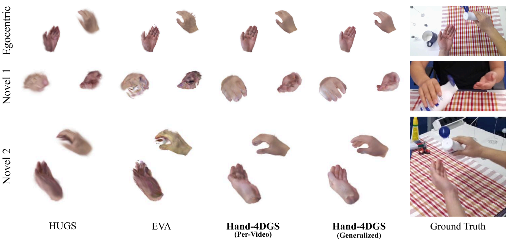
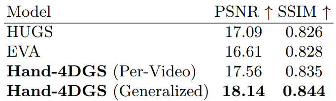
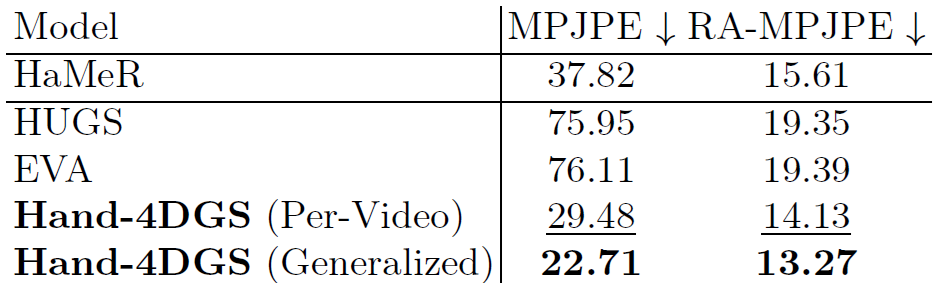

Hand-4DGS reconstructs dynamic 4D hands from egocentric videos with a feed-forward 3D Gaussian Splatting framework. The project evaluates both per-video optimization and generalized inference on unseen sequences, showing accurate hand geometry, novel-view rendering, and improved hand pose estimation across H2O and ARCTIC settings.
We evaluate two settings: Hand-4DGS (Per-Video), which trains directly on each target video for comparison with scene-specific optimization baselines, and Hand-4DGS (Generalized), which trains on other sequences and tests on unseen videos.
Despite training on single-view egocentric videos, Hand-4DGS reconstructs accurate hand geometry from novel viewpoints, while baselines fail to maintain hand structure.

The framework achieves improved visual quality on subject4_h1 sequences. The generalized model is evaluated on unseen sequences.

Hand-4DGS improves upon initial pose estimates from HaMeR, while baseline methods degrade below the initial accuracy.

Predicted hand vertices are shown in blue and ground truth in red. Hand-4DGS maintains consistent alignment across frames, while baselines show drift and misalignment.